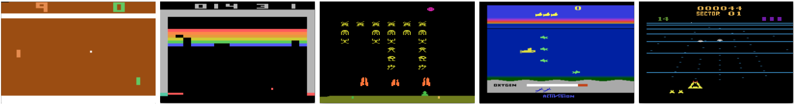
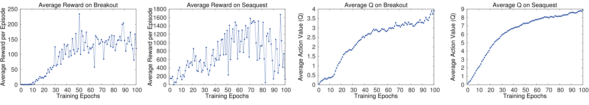
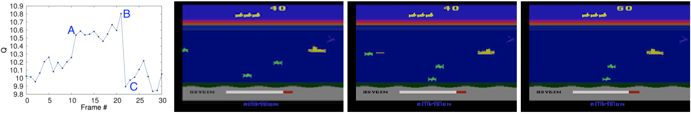

用深度强化学习玩 AtariPlaying Atari with Deep Reinforcement Learning
我们提出第一个用强化学习直接从高维感官输入成功学习控制策略的深度学习模型。该模型是一个卷积神经网络，使用 Q-learning 的一个变体训练，输入是原始像素，输出是估计未来回报的价值函数。我们把该方法应用于Arcade Learning Environment 中的七款 Atari 2600 游戏，且不调整网络结构或学习算法。我们发现它在其中六款游戏上优于所有先前方法，并在三款游戏上超过人类专家。
正文、图表与参考文献均来自源 PDF 解析结果。专业术语、模型名、游戏名与人名按要求保留原文；术语上的金色虚线表示可悬停（触屏可点按）查看中文解释。参考文献整节保留英文原文不译（原文使用方括号数字引用，与文中的 [n] 对应）。原文用 ε 表示探索率、用 γ 表示折扣因子，译文保留这两个符号。
1 引言
直接从视觉、语音等高维感官输入学习控制智能体，是强化学习（RL）长期以来的挑战之一。在这些领域取得成功的多数 RL 应用，都依赖人工设计的特征，再配合线性价值函数或策略表示。显然，这类系统的性能严重依赖特征表示的质量。
深度学习近来的进展使得从原始感官数据中提取高层特征成为可能，并在计算机视觉 [11, 22, 16] 与语音识别 [6, 7] 中带来突破。这些方法使用了多种神经网络结构，包括卷积网络、多层感知机、受限玻尔兹曼机与循环神经网络，并同时利用了监督与无监督学习。于是自然会问：类似的技术是否也能对基于感官数据的 RL 有帮助？
然而从深度学习的角度看，强化学习带来若干挑战。首先，迄今大多数成功的深度学习应用都需要大量人工标注的训练数据；而 RL 算法必须能从一个标量奖励信号中学习，而这个信号往往是稀疏、含噪且有延迟的。动作与由此产生的奖励之间的延迟可能长达数千个时间步，这与监督学习里输入与目标之间的直接对应相比，显得格外棘手。另一个问题是：多数深度学习算法假定数据样本相互独立，而强化学习中通常遇到的是高度相关的状态序列。此外在 RL 中，数据分布会随算法学到新行为而改变，这对假定底层分布固定的深度学习方法可能造成问题。
本文表明，卷积神经网络能够克服这些挑战，在复杂 RL 环境中从原始视频数据学到成功的控制策略。网络用 Q-learning [26] 算法的一个变体训练，用随机梯度下降更新权重。为缓解数据相关与非平稳分布的问题，我们使用经验回放机制 [13]：它随机抽取先前的转移，从而在许多过去行为上平滑训练分布。

我们把方法应用于 The Arcade Learning Environment（ALE）[3] 中实现的一系列 Atari 2600 游戏。Atari 2600 是一个具有挑战性的 RL 测试平台：它给智能体提供高维视觉输入（60 Hz 的 210 × 160 RGB 视频），以及一组多样而有趣、且被设计为对人类玩家有难度的任务。我们的目标是创造一个单一神经网络智能体，能成功学会尽可能多的游戏。该网络未获得任何游戏特定信息或人工设计的视觉特征，也无法接触模拟器的内部状态；它只从视频输入、奖励与终止信号以及可用动作集合中学习——就像人类玩家一样。此外，网络结构与训练所用的全部超参数在所有游戏上保持一致。截至目前，该网络在我们尝试的七款游戏中的六款上优于所有先前 RL 算法，并在其中三款上超过人类专家玩家。图 1 给出了训练所用五款游戏的样本截图。
2 背景
我们考虑智能体以一系列动作、观测与奖励与环境 E（此处即 Atari 模拟器）交互的任务。在每个时间步，智能体从合法游戏动作集合 A = {1, …, K} 中选择动作 at。该动作被送入模拟器，改变其内部状态与游戏分数。一般而言 E 可能是随机的。智能体观测不到模拟器的内部状态；它观测到的是来自模拟器的一幅图像 xt ∈ ℝd，即表示当前屏幕的原始像素值向量。此外它还收到表示游戏分数变化的奖励 rt。注意一般而言，游戏分数可能依赖此前全部动作与观测序列；某个动作的反馈可能要经过成千上万个时间步之后才能收到。
由于智能体只观测当前屏幕的图像，任务属于部分可观测，许多模拟器状态在感知上彼此混同，即仅凭当前屏幕 xt 无法完整理解当前情形。因此我们考虑动作与观测的序列 st = x1, a1, x2, …, at−1, xt，并学习依赖这些序列的游戏策略。模拟器中的所有序列都假定在有限时间步内终止。这一形式化给出一个很大但有限的马尔可夫决策过程（MDP），其中每条序列是一个独立状态。因此我们可以直接把这些序列 st 作为时刻 t 的状态表示，从而套用 MDP 的标准强化学习方法。
智能体的目标是通过选择动作与环境交互，以最大化未来奖励。我们采用标准假设：未来奖励按每步因子 γ 折扣，并定义时刻 t 的未来折扣回报为 Rt = T∑t′=tγt′−trt′，其中 T 是游戏终止的时间步。我们定义最优动作价值函数 Q*(s, a) 为：在看到某序列 s 并采取动作 a 后，跟随任意策略所能获得的最大期望回报，即 Q*(s, a) = maxπ 𝔼[Rt | st = s, at = a, π]，其中 π 是把序列映射到动作（或动作上的分布）的策略。
最优动作价值函数满足一个重要恒等式，称为贝尔曼方程。其直觉是：如果下一时刻序列 s′ 的最优价值 Q*(s′, a′) 对所有可能动作 a′ 都已知，那么最优策略就是选择使 r + γQ*(s′, a′) 期望值最大的动作 a′：
许多强化学习算法背后的基本想法是估计动作价值函数：把贝尔曼方程用作迭代更新 Qi+1(s, a) = 𝔼[r + γ maxa′ Qi(s′, a′) | s, a]。这类价值迭代算法收敛到最优动作价值函数，Qi → Q*（当 i → ∞）[23]。在实践中这种基本做法完全不可行，因为动作价值函数是对每条序列分别估计的，没有任何泛化。作为替代，通常用函数近似器来估计动作价值函数，Q(s, a; θ) ≈ Q*(s, a)。在强化学习社区中这通常是线性函数近似器，但有时也会用非线性近似器，例如神经网络。我们把权重为 θ 的神经网络函数近似器称为 Q-网络。Q-网络可以通过最小化一系列损失函数 Li(θi)（每轮 i 改变）来训练：
其中 yi = 𝔼s′∼E[r + γ maxa′ Q(s′, a′; θi−1) | s, a] 是第 i 轮的目标，ρ(s, a) 是序列 s 与动作 a 上的概率分布，我们称之为行为分布。优化损失函数 Li(θi) 时，上一轮的参数 θi−1 保持固定。注意目标依赖网络权重；这与监督学习所用的目标不同——后者在学习开始前就固定了。对损失函数关于权重求导，得到下述梯度：
与其计算上述梯度中完整的期望，通常更方便的是用随机梯度下降优化损失函数。如果每个时间步后都更新权重，并把期望分别替换为来自行为分布 ρ 与模拟器 E 的单次采样，我们就得到熟悉的 Q-learning 算法 [26]。
注意该算法是无模型的：它直接用来自模拟器 E 的样本解决强化学习任务，而不显式构造对 E 的估计。它也是离策略的：它学习贪心策略 a = maxa Q(s, a; θ)，同时遵循一个能保证充分探索状态空间的行为分布。在实践中，行为分布常由 ε-贪心策略给出：以概率 1 − ε 遵循贪心策略，以概率 ε 选择随机动作。
3 相关工作
强化学习最著名的成功故事大概是 TD-gammon：一个完全通过强化学习与自我对弈学成的西洋双陆棋程序，达到了超人水平 [24]。TD-gammon 使用了类似 Q-learning 的无模型强化学习算法，并用一个含单个隐藏层的多层感知机近似价值函数1。
然而，后续跟进 TD-gammon 的早期尝试——包括把同一方法用于国际象棋、围棋与跳棋——都不太成功。这使人们普遍认为 TD-gammon 的做法只是一个特例，只在西洋双陆棋中有效，也许是因为掷骰子的随机性既有助于探索状态空间，又使价值函数格外平滑 [19]。
此外有研究表明，把 Q-learning 这类无模型强化学习算法与非线性函数近似器结合 [25]，或与离策略学习结合 [1]，都可能导致 Q-网络发散。此后强化学习的大部分工作转向收敛性保证更好的线性函数近似器 [25]。
更近一些，把深度学习与强化学习结合的兴趣重新兴起。深度神经网络被用来估计环境 E；受限玻尔兹曼机被用来估计价值函数 [21] 或策略 [9]。此外，Q-learning 的发散问题已被梯度时序差分方法部分解决：这些方法被证明在「用非线性函数近似器评估固定策略」[14] 或「用线性函数近似并配合受限的 Q-learning 变体学习控制策略」[15] 时收敛。但这些方法尚未推广到非线性控制。
与我们的方法最相似的先前工作大概是 neural fitted Q-learning（NFQ）[20]。NFQ 优化式 2 中的那串损失函数，用 RPROP 算法更新 Q-网络的参数。但它采用批更新，每次迭代的计算代价与数据集规模成正比；而我们考虑随机梯度更新，每次迭代的常数代价很低，且能扩展到大数据集。NFQ 也已被成功用于仅依赖视觉输入的简单真实控制任务：先用深度自编码器学出任务的低维表示，再在该表示上应用 NFQ [12]。相比之下，我们的方法是端到端地直接从视觉输入做强化学习，因此可能学到与「区分各动作价值」直接相关的特征。Q-learning 此前也已被与经验回放和简单神经网络结合 [13]，但同样是从低维状态出发，而非原始视觉输入。
把 Atari 2600 模拟器用作强化学习平台由 [3] 引入，他们应用了配合线性函数近似与通用视觉特征的标准强化学习算法。随后，通过使用更多特征、并用 tug-of-war 哈希把特征随机投影到低维空间，结果得到改进 [2]。HyperNEAT 演化式结构 [8] 也已被应用于 Atari 平台，用来为每个具体游戏分别演化出一个表示该游戏策略的神经网络。当利用模拟器的重置功能、反复针对确定性序列训练时，这些策略能够利用若干 Atari 游戏的设计缺陷。
4 深度强化学习
计算机视觉与语音识别近来的突破，依赖于在非常大的训练集上高效训练深度神经网络。最成功的做法是直接从原始输入训练，使用基于随机梯度下降的轻量更新。通过把足够多的数据喂给深度神经网络，往往可以学到比人工设计特征更好的表示 [11]。这些成功激励了我们的强化学习做法。我们的目标是把强化学习算法与直接在 RGB 图像上运行的深度神经网络连接起来，并用随机梯度更新高效处理训练数据。
Tesauro 的 TD-Gammon 结构为这种做法提供了一个起点。该结构直接根据从算法与环境交互中（在西洋双陆棋里则是自我对弈）得到的在线经验样本 st, at, rt, st+1, at+1，更新一个估计价值函数的网络的参数。既然这一做法在 20 年前就能胜过最好的人类西洋双陆棋手，那么自然会想：二十年的硬件进步，加上现代深度神经网络结构与可扩展的 RL 算法，是否可能带来显著进展。
与 TD-Gammon 及类似的在线方法不同，我们使用一种称为经验回放的技术 [13]：把智能体在每个时间步的经验 et = (st, at, rt, st+1) 存入数据集 D = e1, …, eN，把许多回合的经验汇集到回放记忆中。在算法内层循环中，我们对从存储样本池中随机抽取的经验样本 e ∼ D 施加 Q-learning 更新（或小批量更新）。做完经验回放后，智能体按 ε-贪心策略选择并执行动作。由于把任意长度的历史直接作为神经网络输入可能很困难，我们的 Q 函数改为工作在由函数 φ 产生的、定长表示的历史之上。完整算法称为深度 Q-learning，见算法 1。
- for 回合 = 1, M do
- 初始化序列 s1 = {x1}，并做预处理 φ1 = φ(s1)
- for t = 1, T do
- 以概率 ε 选择随机动作 at
- 否则选择 at = maxa Q*(φ(st), a; θ)
- 在模拟器中执行动作 at，观测奖励 rt 与图像 xt+1
- 令 st+1 = st, at, xt+1，并预处理 φt+1 = φ(st+1)
- 把转移 (φt, at, rt, φt+1) 存入 D
- 从 D 中随机抽取一个小批量转移 (φj, aj, rj, φj+1)
- 令 yj = rj（若 φj+1 为终止状态）；否则 yj = rj + γ maxa′ Q(φj+1, a′; θ)
- 按式 3 对 (yj − Q(φj, aj; θ))2 执行一步梯度下降
- end for
- end for
相比标准的在线 Q-learning [23]，这一做法有几个优点。第一，每一步经验都可能被用于许多次权重更新，从而获得更高的数据效率。第二，直接从连续样本学习效率低，因为样本之间高度相关；把样本随机化就打破了这些相关性，从而降低更新的方差。第三，在线学习时，当前参数决定了参数接下来要训练的下一个数据样本。例如，若使价值最大的动作是向左移动，那么训练样本就会被左侧的样本主导；若最大化动作随后切换到向右，训练分布也会随之切换。很容易看出这些不想要的反馈回路如何出现，使参数卡在糟糕的局部极小，甚至灾难性发散 [25]。使用经验回放后，行为分布会在它许多先前状态上取平均，从而平滑学习、避免参数振荡或发散。注意用经验回放学习时必须做离策略学习（因为我们当前的参数与生成样本时所用的参数不同），这也正是选择 Q-learning 的动机。
在实践中，我们的算法只在回放记忆中保存最近 N 条经验元组，更新时从 D 中均匀随机采样。这种做法在某些方面有其局限：记忆缓冲不区分重要转移，并且由于容量 N 有限，总是用最近的转移覆盖旧数据。同样，均匀采样也同等对待回放记忆中的所有转移。更精细的采样策略可能会强调那些能让我们学到最多的转移，类似优先扫描 [17]。
4.1 预处理与模型结构
直接处理原始的 Atari 帧——210 × 160 像素、128 色调色板的图像——计算量可能很大，因此我们施加一个旨在降低输入维度的基本预处理步骤。原始帧先由 RGB 表示转成灰度，再下采样为 110 × 84 的图像。最终的输入表示取自该图像中一个 84 × 84 的区域，它大致覆盖游戏区域。之所以需要最后这一步裁剪，只是因为我们使用 [11] 的 2D 卷积 GPU 实现，而它要求输入为方形。本文实验中，算法 1 中的函数 φ 把该预处理施加到历史中最新的 4 帧上，并把它们堆叠起来作为 Q 函数的输入。
用神经网络参数化 Q 有几种可能方式。由于 Q 把「历史—动作」对映射为它们 Q 值的标量估计，一些先前做法 [20, 12] 把历史与动作都作为神经网络输入。这类结构的主要缺点在于：计算每个动作的 Q 值都需要单独一次前向传递，代价随动作数线性增长。我们改用的结构是：每个可能动作对应一个独立输出单元，神经网络只以状态表示为输入；输出对应输入状态下各动作的预测 Q 值。这类结构的主要优点是：只需对网络做一次前向传递，就能算出给定状态下所有可能动作的 Q 值。
下面我们描述全部七款 Atari 游戏所用的确切结构。神经网络的输入是 φ 产生的 84 × 84 × 4 图像。第一个隐藏层用 16 个 8 × 8、步长 4 的滤波器与输入图像做卷积，并施加整流非线性 [10, 18]。第二个隐藏层用 32 个 4 × 4、步长 2 的滤波器做卷积，同样接整流非线性。最后一个隐藏层是全连接层，含 256 个整流单元。输出层是全连接线性层，对每个合法动作给出一个输出。在我们考虑的游戏上，合法动作数为 4 到 18 不等。我们把用本方法训练的卷积网络称为 Deep Q-Networks（DQN）。
5 实验
到目前为止，我们在七款流行的 ATARI 游戏上做了实验——Beam Rider、Breakout、Enduro、Pong、Q*bert、Seaquest、Space Invaders。我们在全部七款游戏上使用相同的网络结构、学习算法与超参数设置，表明我们的方法足够稳健，无需引入游戏特定信息就能适用于多种游戏。虽然我们在真实、未经修改的游戏上评估智能体，但仅对训练时的奖励结构做了一处改动。由于各游戏分数尺度差异很大，我们把所有正奖励固定为 1、所有负奖励固定为 −1，0 奖励保持不变。以这种方式裁剪奖励限制了误差导数的尺度，使我们在多款游戏上更容易使用同一学习率。同时，这也会影响智能体性能，因为它无法区分不同大小的奖励。
在这些实验中，我们使用 RMSProp 算法、小批量大小为 32。训练时的行为策略是 ε-贪心：ε 在最初一百万帧内从 1 线性退火到 0.1，此后固定为 0.1。我们共训练 1000 万帧，回放记忆保存最近一百万帧。
仿照先前玩 Atari 游戏的做法，我们还使用一种简单的跳帧技术 [3]。更确切地说，智能体不是每一帧都观测并选择动作，而是每第 k 帧一次，被跳过的帧上重复它上一个动作。由于让模拟器往前跑一步所需的计算远少于让智能体选一次动作，这一技术使智能体能在不显著增加运行时间的情况下玩大约 k 倍多的游戏。我们对所有游戏都用 k = 4，只有 Space Invaders 例外——我们注意到用 k = 4 会让激光不可见，因为激光闪烁的周期与之重合。我们改用 k = 3 让激光可见，这是各游戏之间超参数取值的唯一差异。
5.1 训练与稳定性
在监督学习中，人们很容易通过在训练集与验证集上评估来跟踪模型训练期间的表现。然而在强化学习中，准确评估智能体训练期间的进展可能很有挑战。由于我们的评估指标（按 [3] 的建议）是智能体在一局游戏或一场对局中收集到的总奖励、并在若干场游戏上取平均，我们在训练期间周期性地计算它。平均总奖励这一指标往往噪声很大，因为策略权重的小改变可能导致策略访问的状态分布发生大变化。图 2 最左的两个图展示了 Seaquest 与 Breakout 上平均总奖励在训练期间的演化。两个平均奖励曲线确实都相当嘈杂，给人的印象是学习算法并未稳步推进。另一个更稳定的指标是策略估计出的动作价值函数 Q，它估计智能体从任意给定状态出发、遵循其策略能获得多少折扣奖励。我们在训练开始前先用随机策略跑一遍，收集一组固定的状态，并跟踪这些状态的最大预测 Q 值的平均2。图 2 最右的两个图表明，平均预测 Q 的增长比智能体获得的平均总奖励平滑得多；在另外五款游戏上绘制同样的指标也得到类似平滑的曲线。除了看到预测 Q 在训练中相对平滑地改善之外，我们在所有实验中都没有遇到发散问题。这表明，尽管缺少任何理论收敛保证，我们的方法能够用强化学习信号与随机梯度下降稳定地训练大型神经网络。

5.2 价值函数可视化
图 3 展示了 Seaquest 上学到的价值函数的可视化。该图显示出：当敌人出现在屏幕左侧后，预测价值跳升（A 点）。随后智能体朝敌人发射一枚鱼雷，在鱼雷即将命中敌人时预测价值达到峰值（B 点）。最后在敌人消失后，价值回落到大致原值（C 点）。图 3 表明我们的方法能够学会价值函数在一个相当复杂的事件序列中如何演化。

5.3 主要评估
我们把结果与 RL 文献中表现最好的方法 [3, 4] 比较。标记为 Sarsa 的方法用 Sarsa 算法在若干为 Atari 任务人工设计的特征集上学习线性策略，我们报告表现最好的特征集的分数 [3]。Contingency 使用与 Sarsa 相同的基本做法，但用「屏幕中受智能体控制的部分」的学习表示来扩充特征集 [4]。注意这两种方法都通过背景减除、并把 128 种颜色各自当作独立通道，从而引入了大量关于视觉问题的先验知识。由于许多 Atari 游戏为每类物体使用一种独特颜色，把每种颜色当作独立通道，类似于为每类物体是否出现生成一张独立的二值图。相比之下，我们的智能体只接收原始 RGB 截图作为输入，必须自己学会检测物体。
除学习型智能体之外，我们还报告了一位人类专家玩家的分数，以及一个均匀随机选择动作的策略的分数。人类分数是每款游戏玩约两小时后取得的中位奖励。注意我们报告的人类分数比 Bellemare et al. [3] 中的高得多。对学习型方法，我们遵循 Bellemare et al. [3, 5] 使用的评估策略，报告以 ε = 0.05 运行 ε-贪心策略固定步数所得的平均分数。表 1 的前五行给出所有游戏的逐游戏平均分数。我们的方法（标记为 DQN）尽管几乎没有引入任何关于输入的先验知识，却在全部七款游戏上以较大幅度优于其他学习方法。
我们还在表 1 的最后三行加入了与 [8] 的演化式策略搜索方法的比较。我们报告该方法的两组结果。HNeat Best 分数反映使用一个手工设计的物体检测算法（输出 Atari 屏幕上物体的位置与类型）所得到的结果。HNeat Pixel 分数则用 Atari 模拟器特殊的 8 通道颜色表示（每个通道代表一张物体标签图）得到。该方法高度依赖找到一条确定性的、代表成功利用漏洞的状态序列。以这种方式学到的策略不太可能泛化到随机扰动，因此该算法只在得分最高的单局上评估。相比之下，我们的算法在 ε-贪心控制序列上评估，因此必须在各种可能情形上泛化。尽管如此，我们表明除 Space Invaders 之外的所有游戏上，不仅我们的最大评估结果（第 8 行）更好，我们的平均结果（第 4 行）也更好。
| B. Rider | Breakout | Enduro | Pong | Q*bert | Seaquest | S. Invaders | |
| Random | 354 | 1.2 | 0 | −20.4 | 157 | 110 | 179 |
| Sarsa [3] | 996 | 5.2 | 129 | −19 | 614 | 665 | 271 |
| Contingency [4] | 1743 | 6 | 159 | −17 | 960 | 723 | 268 |
| DQN | 4092 | 168 | 470 | 20 | 1952 | 1705 | 581 |
| Human | 7456 | 31 | 368 | −3 | 18900 | 28010 | 3690 |
| HNeat Best [8] | 3616 | 52 | 106 | 19 | 1800 | 920 | 1720 |
| HNeat Pixel [8] | 1332 | 4 | 91 | −16 | 1325 | 800 | 1145 |
| DQN Best | 5184 | 225 | 661 | 21 | 4500 | 1740 | 1075 |
表 1 上表比较各学习方法以 ε = 0.05 运行 ε-贪心策略固定步数所得的平均总奖励。下表报告 HNeat 与 DQN 表现最好的单局结果。HNeat 产生确定性策略、总是得到相同分数，而 DQN 使用 ε = 0.05 的 ε-贪心策略。
最后我们展示，我们的方法在 Breakout、Enduro 与 Pong 上优于人类专家玩家，并在 Beam Rider 上接近人类水平。Q*bert、Seaquest、Space Invaders 这几款游戏我们远未达到人类水平，它们更具挑战，因为要求网络找到一种跨越长时间尺度的策略。
6 结论
本文为强化学习引入了一个新的深度学习模型，并展示了它仅以原始像素为输入，就能掌握 Atari 2600 电脑游戏的困难控制策略。我们还提出了在线 Q-learning 的一个变体，它把随机小批量更新与经验回放记忆结合起来，以便更轻松地为 RL 训练深度网络。我们的方法在所测试的七款游戏中的六款上取得当时最优结果，且没有调整结构或超参数。
参考文献
按原文要求，参考文献整节保留英文原文，未作翻译。原文以方括号编号引用（[1]–[26]），此处按原文编号顺序排列。
- Leemon Baird. Residual algorithms: Reinforcement learning with function approximation. In Proceedings of the 12th International Conference on Machine Learning (ICML 1995), pages 30–37. Morgan Kaufmann, 1995.
- Marc Bellemare, Joel Veness, and Michael Bowling. Sketch-based linear value function approximation. In Advances in Neural Information Processing Systems 25, pages 2222–2230, 2012.
- Marc G Bellemare, Yavar Naddaf, Joel Veness, and Michael Bowling. The arcade learning environment: An evaluation platform for general agents. Journal of Artificial Intelligence Research, 47:253–279, 2013.
- Marc G Bellemare, Joel Veness, and Michael Bowling. Investigating contingency awareness using atari 2600 games. In AAAI, 2012.
- Marc G. Bellemare, Joel Veness, and Michael Bowling. Bayesian learning of recursively factored environments. In Proceedings of the Thirtieth International Conference on Machine Learning (ICML 2013), pages 1211–1219, 2013.
- George E. Dahl, Dong Yu, Li Deng, and Alex Acero. Context-dependent pre-trained deep neural networks for large-vocabulary speech recognition. Audio, Speech, and Language Processing, IEEE Transactions on, 20(1):30 –42, January 2012.
- Alex Graves, Abdel-rahman Mohamed, and Geoffrey E. Hinton. Speech recognition with deep recurrent neural networks. In Proc. ICASSP, 2013.
- Matthew Hausknecht, Risto Miikkulainen, and Peter Stone. A neuro-evolution approach to general atari game playing. 2013.
- Nicolas Heess, David Silver, and Yee Whye Teh. Actor-critic reinforcement learning with energy-based policies. In European Workshop on Reinforcement Learning, page 43, 2012.
- Kevin Jarrett, Koray Kavukcuoglu, MarcAurelio Ranzato, and Yann LeCun. What is the best multi-stage architecture for object recognition? In Proc. International Conference on Computer Vision and Pattern Recognition (CVPR 2009), pages 2146–2153. IEEE, 2009.
- Alex Krizhevsky, Ilya Sutskever, and Geoff Hinton. Imagenet classification with deep convolutional neural networks. In Advances in Neural Information Processing Systems 25, pages 1106–1114, 2012.
- Sascha Lange and Martin Riedmiller. Deep auto-encoder neural networks in reinforcement learning. In Neural Networks (IJCNN), The 2010 International Joint Conference on, pages 1–8. IEEE, 2010.
- Long-Ji Lin. Reinforcement learning for robots using neural networks. Technical report, DTIC Document, 1993.
- Hamid Maei, Csaba Szepesvari, Shalabh Bhatnagar, Doina Precup, David Silver, and Rich Sutton. Convergent Temporal-Difference Learning with Arbitrary Smooth Function Approximation. In Advances in Neural Information Processing Systems 22, pages 1204–1212, 2009.
- Hamid Maei, Csaba Szepesvari, Shalabh Bhatnagar, and Richard S. Sutton. Toward off-policy´ learning control with function approximation. In Proceedings of the 27th International Conference on Machine Learning (ICML 2010), pages 719–726, 2010.
- Volodymyr Mnih. Machine Learning for Aerial Image Labeling. PhD thesis, University of Toronto, 2013.
- Andrew Moore and Chris Atkeson. Prioritized sweeping: Reinforcement learning with less data and less real time. Machine Learning, 13:103–130, 1993.
- Vinod Nair and Geoffrey E Hinton. Rectified linear units improve restricted boltzmann machines. In Proceedings of the 27th International Conference on Machine Learning (ICML 2010), pages 807–814, 2010.
- Jordan B. Pollack and Alan D. Blair. Why did td-gammon work. In Advances in Neural Information Processing Systems 9, pages 10–16, 1996.
- Martin Riedmiller. Neural fitted q iteration–first experiences with a data efficient neural reinforcement learning method. In Machine Learning: ECML 2005, pages 317–328. Springer, 2005.
- Brian Sallans and Geoffrey E. Hinton. Reinforcement learning with factored states and actions. Journal ofMachine Learning Research, 5:1063–1088, 2004.
- Pierre Sermanet, Koray Kavukcuoglu, Soumith Chintala, and Yann LeCun. Pedestrian detection with unsupervised multi-stage feature learning. In Proc. International Conference on Computer Vision and Pattern Recognition (CVPR 2013). IEEE, 2013.
- Richard Sutton and Andrew Barto. Reinforcement Learning: An Introduction. MIT Press, 1998.
- Gerald Tesauro. Temporal difference learning and td-gammon. Communications of the ACM, 38(3):58–68, 1995.
- John N Tsitsiklis and Benjamin Van Roy. An analysis of temporal-difference learning with function approximation. Automatic Control, IEEE Transactions on, 42(5):674–690, 1997.
- Christopher JCH Watkins and Peter Dayan. Q-learning. Machine learning, 8(3-4):279–292, 1992.
图表索引
- 图 1 五款 Atari 2600 游戏的截图（引言）
- 图 2 Breakout 与 Seaquest 上训练期间的平均奖励与平均最大预测 Q（5.1 节）
- 图 3 Seaquest 上学习到的价值函数可视化（5.2 节）
表 1 各方法在七款 Atari 游戏上的平均总奖励与最佳单局结果（5.3 节）已在正文中直接排出；算法 1（带经验回放的深度 Q-learning）以伪代码块形式排入第 4 节；式 (1)–(3) 按原文位置排入正文。本文原文没有附录。
本页由 Zotero 库中的 PDF 原文与 MinerU 解析结果翻译整理而成。图片为从源 PDF 中裁取的原始插图，存于同目录下 images/。参考文献保留原文，未作翻译；原文脚注按位置以悬停注释形式保留并译出。